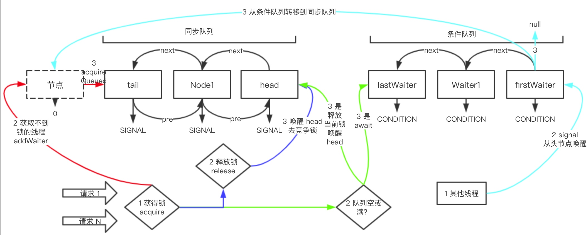

<!doctype html>
<html class="no-js" lang="en">
  <head>
    <meta charset="utf-8" />
    <meta name="viewport" content="width=device-width, initial-scale=1.0" />
    <title>
    
  队列同步器 - Isaac Blog
  
  </title>
  
  
  <link href="atom.xml" rel="alternate" title="Isaac Blog" type="application/atom+xml">
    <link rel="stylesheet" href="asset/css/foundation.min.css" />
    <link rel="stylesheet" href="asset/css/docs.css" />
    <script src="asset/js/vendor/modernizr.js"></script>
    <script src="asset/js/vendor/jquery.js"></script>
 
<script type="text/javascript">
  function before_search(){
    var searchVal = 'site: ' + document.getElementById('search_input').value;
    document.getElementById('search_q').value = searchVal;
    return true;
  }
</script>
  </head>
  <body class="antialiased hide-extras">
    
    <div class="marketing off-canvas-wrap" data-offcanvas>
      <div class="inner-wrap">


<nav class="top-bar docs-bar hide-for-small" data-topbar>


  <section class="top-bar-section">
  <div class="row">
      <div style="position: relative;width:100%;"><div style="position: absolute; width:100%;">
        <ul id="main-menu" class="left">
        
        <li id=""><a target="_self" href="index.html">Home</a></li>
        
        <li id=""><a target="_self" href="archives.html">Archives</a></li>
        
        <li id=""><a target="_self" href="index.html">Home</a></li>
        
        </ul>

        <ul class="right" id="search-wrap">
          <li>
<form target="_blank" onsubmit="return before_search();" action="https://google.com/search" method="get">
    <input type="hidden" id="search_q" name="q" value="" />
    <input tabindex="1" type="search" id="search_input"  placeholder="Search"/>
</form>
</li>
          </ul>
      </div></div>
  </div>
  </section>

</nav>

        <nav class="tab-bar show-for-small">
  <a href="javascript:void(0)" class="left-off-canvas-toggle menu-icon">
    <span> &nbsp; Isaac Blog</span>
  </a>
</nav>

<aside class="left-off-canvas-menu">
      <ul class="off-canvas-list">
        
        <li><a target="_self" href="index.html">Home</a></li>
        
        <li><a target="_self" href="archives.html">Archives</a></li>
        
        <li><a target="_self" href="index.html">Home</a></li>
        

    <li><label>Categories</label></li>

        
            <li><a href="Java.html">Java</a></li>
        
            <li><a href="Nginx.html">Nginx</a></li>
        
            <li><a href="%E6%B6%88%E6%81%AF%E9%98%9F%E5%88%97.html">消息队列</a></li>
        
            <li><a href="Kubernetes.html">Kubernetes</a></li>
        
            <li><a href="%E7%B3%BB%E7%BB%9F%E6%9E%B6%E6%9E%84.html">系统架构</a></li>
        
            <li><a href="Redis.html">Redis</a></li>
        
            <li><a href="Tomcat.html">Tomcat</a></li>
        
            <li><a href="MySQL.html">MySQL</a></li>
        
            <li><a href="Spring.html">Spring</a></li>
        
            <li><a href="%E5%B7%A5%E4%BD%9C%E9%97%AE%E9%A2%98.html">工作问题</a></li>
        
            <li><a href="%E5%88%86%E5%B8%83%E5%BC%8F%E5%9F%BA%E7%A1%80.html">分布式基础</a></li>
        
            <li><a href="%E5%B9%B6%E5%8F%91.html">并发</a></li>
         

      </ul>
    </aside>

<a class="exit-off-canvas" href="#"></a>


        <section id="main-content" role="main" class="scroll-container">
        
       

 <script type="text/javascript">
  $(function(){
    $('#menu_item_index').addClass('is_active');
  });
</script>
<div class="row">
  <div class="large-8 medium-8 columns">
      <div class="markdown-body article-wrap">
       <div class="article">
          
          <h1>队列同步器</h1>
     
        <div class="read-more clearfix">
          <span class="date">2020/12/31</span>

          <span>posted in&nbsp;</span> 
          
              <span class="posted-in"><a href='%E5%B9%B6%E5%8F%91%E5%B7%A5%E5%85%B7.html'>并发工具</a></span>
           
         
          <span class="comments">
            

            
          </span>

        </div>
      </div><!-- article -->

      <div class="article-content">
      <p>队列同步器AbstractQueuedSynchronizer，用来构建锁或其他同步组件的基础框架，使用int变量表示同步状态，通过内置的FIFO队列来完成资源获取线程的排队工作</p>
<span id="more"></span><!-- more -->
<h2><a id="%E5%AE%9E%E7%8E%B0" class="anchor" aria-hidden="true"><span class="octicon octicon-link"></span></a>实现</h2>
<p></p>
<h3><a id="%E5%90%8C%E6%AD%A5%E9%98%9F%E5%88%97" class="anchor" aria-hidden="true"><span class="octicon octicon-link"></span></a>同步队列</h3>
<p>同步器依赖内部的同步队列完成同步状态的管理，当前线程获取锁失败后，同步器将当前线程和等待状态构建为一个节点并加入到同步队列中，同时阻塞当前线程，当同步状态释放后，将首节点中的线程唤醒并重新获取同步资源；</p>
<ol>
<li>同步添加尾结点：只有一个线程获取到同步在资源，多个线程需要添加到尾部位置，需要保证线程安全，同步队列提供一个CAS方法设置tail节点</li>
<li>设置首节点：获取同步状态成共的的线程完成，由于只有一个线程获取到同步状态，不需要CAS方法

</li>
</ol>
<h3><a id="%E7%8B%AC%E5%8D%A0%E5%90%8C%E6%AD%A5%E7%8A%B6%E6%80%81%E8%8E%B7%E5%8F%96%E4%B8%8E%E9%87%8A%E6%94%BE" class="anchor" aria-hidden="true"><span class="octicon octicon-link"></span></a>独占同步状态获取与释放</h3>
<p>独占同步获取状态流程图</p>
<pre><code class="language-java">
    public final void acquire(int arg) {
        //1. 通过调用tryAcquire完成线程安全的获取同步状态
        // 2. 如果获取失败则通过addWaiter方法将构造的节点放入同步对列尾部
        // 3. 然后调用acquireQueued方法是使该节点以死循环的方式获取同步状态
        if (!tryAcquire(arg) &amp;&amp;
            acquireQueued(addWaiter(Node.EXCLUSIVE), arg))
            // 通过中断
            selfInterrupt();
    }
    
</code></pre>
<h4><a id="%E5%90%8C%E6%AD%A5%E5%99%A8%E7%9A%84addwaiter%E5%92%8C-enq" class="anchor" aria-hidden="true"><span class="octicon octicon-link"></span></a>同步器的addWaiter()和enq()</h4>
<p>addWaiter()</p>
<pre><code class="language-java">private Node addWaiter(Node mode) {
        Node node = new Node(Thread.currentThread(), mode);
        // Try the fast path of enq; backup to full enq on failure
        Node pred = tail;
        if (pred != null) {
            node.prev = pred;
            // 确保节点被线程安全添加
            if (compareAndSetTail(pred, node)) {
                pred.next = node;
                return node;
            }
        }
        enq(node);
        return node;
    }
</code></pre>
<p>enq()</p>
<pre><code class="language-java">// 通过CAS将并发添加节点编程串行化
private Node enq(final Node node) {
        for (;;) {
            Node t = tail;
            if (t == null) { // Must initialize
                if (compareAndSetHead(new Node()))
                    tail = head;
            } else {//只有通过CAS将节点设置成尾结点 才能退出
                node.prev = t;
                if (compareAndSetTail(t, node)) {
                    t.next = node;
                    return t;
                }
            }
        }
    }
    
</code></pre>
<h4><a id="acquirequeued%E6%96%B9%E6%B3%95" class="anchor" aria-hidden="true"><span class="octicon octicon-link"></span></a>acquireQueued方法</h4>
<pre><code class="language-java">// 1. 头节点是获取同步状态的节点，释放同步状态后会唤醒其后继节点，而被唤醒的后继节点需要判断他的前驱节点是否是头节点
// 2. 维护同步队列的FIFO原则
final boolean acquireQueued(final Node node, int arg) {
        boolean failed = true;
        try {
            boolean interrupted = false;
            for (;;) {
                final Node p = node.predecessor();
                // 只有前驱节点是头节点的才能尝试获取同步状态
                if (p == head &amp;&amp; tryAcquire(arg)) {
                    setHead(node);
                    p.next = null; // help GC
                    failed = false;
                    return interrupted;
                }
                if (shouldParkAfterFailedAcquire(p, node) &amp;&amp;
                    parkAndCheckInterrupt())
                    interrupted = true;
            }
        } finally {
            if (failed)
                cancelAcquire(node);
        }
    }
    
</code></pre>


    

      </div>

      <div class="row">
        <div class="large-6 columns">
        <p class="text-left" style="padding:15px 0px;">
      
          <a href="16097532870959.html" 
          title="Previous Post: Semaphore">&laquo; Semaphore</a>
      
        </p>
        </div>
        <div class="large-6 columns">
      <p class="text-right" style="padding:15px 0px;">
      
          <a  href="16093806501511.html" 
          title="Next Post: Lock & Condition">Lock & Condition &raquo;</a>
      
      </p>
        </div>
      </div>
      <div class="comments-wrap">
        <div class="share-comments">
          

          

          
        </div>
      </div>
    </div><!-- article-wrap -->
  </div><!-- large 8 -->


 <div class="large-4 medium-4 columns">
  <div class="hide-for-small">
    <div id="sidebar" class="sidebar">
          <div id="site-info" class="site-info">
            
                <div class="site-a-logo"></div>
            
                <h1>Isaac Blog</h1>
                <div class="site-des">个人博客</div>
                <div class="social">


  <a target="_blank" class="rss" href="atom.xml" title="RSS">RSS</a>
                
              	 </div>
          	</div>

             

              <div id="site-categories" class="side-item ">
                <div class="side-header">
                  <h2>Categories</h2>
                </div>
                <div class="side-content">

      	<p class="cat-list">
        
            <a href="Java.html"><strong>Java</strong></a>
        
            <a href="Nginx.html"><strong>Nginx</strong></a>
        
            <a href="%E6%B6%88%E6%81%AF%E9%98%9F%E5%88%97.html"><strong>消息队列</strong></a>
        
            <a href="Kubernetes.html"><strong>Kubernetes</strong></a>
        
            <a href="%E7%B3%BB%E7%BB%9F%E6%9E%B6%E6%9E%84.html"><strong>系统架构</strong></a>
        
            <a href="Redis.html"><strong>Redis</strong></a>
        
            <a href="Tomcat.html"><strong>Tomcat</strong></a>
        
            <a href="MySQL.html"><strong>MySQL</strong></a>
        
            <a href="Spring.html"><strong>Spring</strong></a>
        
            <a href="%E5%B7%A5%E4%BD%9C%E9%97%AE%E9%A2%98.html"><strong>工作问题</strong></a>
        
            <a href="%E5%88%86%E5%B8%83%E5%BC%8F%E5%9F%BA%E7%A1%80.html"><strong>分布式基础</strong></a>
        
            <a href="%E5%B9%B6%E5%8F%91.html"><strong>并发</strong></a>
         
        </p>


                </div>
              </div>

              <div id="site-categories" class="side-item">
                <div class="side-header">
                  <h2>Recent Posts</h2>
                </div>
                <div class="side-content">
                <ul class="posts-list">
	      
		      
			      <li class="post">
			        <a href="16502834310091.html">MySQL事务隔离级别和MVCC</a>
			      </li>
		     
		  
		      
			      <li class="post">
			        <a href="16172471826209.html">动静分离</a>
			      </li>
		     
		  
		      
			      <li class="post">
			        <a href="16172434231303.html">秒杀系统架构原则</a>
			      </li>
		     
		  
		      
			      <li class="post">
			        <a href="16157046811341.html">MySQL 高性能索引策略</a>
			      </li>
		     
		  
		      
			      <li class="post">
			        <a href="16144993169245.html">Kubernetes 本质</a>
			      </li>
		     
		  
		      
		  
		      
		  
		      
		  
		      
		  
		      
		  
		      
		  
		      
		  
		      
		  
		      
		  
		      
		  
		      
		  
		      
		  
		      
		  
		      
		  
		      
		   
		  		</ul>
                </div>
              </div>
        </div><!-- sidebar -->
      </div><!-- hide for small -->
</div><!-- large 4 -->

</div><!-- row -->

 <div class="page-bottom clearfix">
  <div class="row">
   <p class="copyright">Copyright &copy; 2015
Powered by <a target="_blank" href="http://www.mweb.im">MWeb</a>,&nbsp; 
Theme used <a target="_blank" href="http://github.com">GitHub CSS</a>.</p>
  </div>
</div>

        </section>
      </div>
    </div>


  


<script src="asset/prism.js"></script>


<style type="text/css">
figure{margin: 0;padding: 0;}
figcaption{text-align:center;}

/* PrismJS 1.14.0
 http://prismjs.com/download.html#themes=prism&languages=markup+css+clike+javascript */
/**
 * prism.js default theme for JavaScript, CSS and HTML
 * Based on dabblet (http://dabblet.com)
 * @author Lea Verou
 */

code[class*="language-"],
pre[class*="language-"] {
    color: black;
    background: none;
    text-shadow: 0 1px white;
    font-family: Consolas, Monaco, 'Andale Mono', 'Ubuntu Mono', monospace;
    text-align: left;
    white-space: pre;
    word-spacing: normal;
    word-break: normal;
    word-wrap: normal;
    line-height: 1.5;
    
    -moz-tab-size: 4;
    -o-tab-size: 4;
    tab-size: 4;
    
    -webkit-hyphens: none;
    -moz-hyphens: none;
    -ms-hyphens: none;
    hyphens: none;
}

pre[class*="language-"]::-moz-selection, pre[class*="language-"] ::-moz-selection,
code[class*="language-"]::-moz-selection, code[class*="language-"] ::-moz-selection {
    text-shadow: none;
    background:#b3d4fc;
}

pre[class*="language-"]::selection, pre[class*="language-"] ::selection,
code[class*="language-"]::selection, code[class*="language-"] ::selection {
    text-shadow: none;
    background: #b3d4fc;
}

@media print {
    code[class*="language-"],
    pre[class*="language-"] {
        text-shadow: none;
    }
}

/* Code blocks */
pre[class*="language-"] {
    padding: 1em;
    margin: .5em 0;
    overflow: auto;
}

:not(pre) > code[class*="language-"],
pre[class*="language-"] {
    background: #F7F7F7;
}

/* Inline code */
:not(pre) > code[class*="language-"] {
    padding: .1em;
    border-radius: .3em;
    white-space: normal;
}

.token.comment,
.token.prolog,
.token.doctype,
.token.cdata {
    color: slategray;
}

.token.punctuation {
    color: #999;
}

.namespace {
    opacity: .7;
}

.token.property,
.token.tag,
.token.boolean,
.token.number,
.token.constant,
.token.symbol,
.token.deleted {
    color: #905;
}

.token.selector,
.token.attr-name,
.token.string,
.token.char,
.token.builtin,
.token.inserted {
    color: #690;
}

.token.operator,
.token.entity,
.token.url,
.language-css .token.string,
.style .token.string {
    color: #9a6e3a;
    background: hsla(0, 0%, 100%, .5);
}

.token.atrule,
.token.attr-value,
.token.keyword {
    color: #07a;
}

.token.function,
.token.class-name {
    color: #DD4A68;
}

.token.regex,
.token.important,
.token.variable {
    color: #e90;
}

.token.important,
.token.bold {
    font-weight: bold;
}
.token.italic {
    font-style: italic;
}

.token.entity {
    cursor: help;
}


pre[class*="language-"].line-numbers {
    position: relative;
    padding-left: 3.8em;
    counter-reset: linenumber;
}

pre[class*="language-"].line-numbers > code {
    position: relative;
    white-space: inherit;
}

.line-numbers .line-numbers-rows {
    position: absolute;
    pointer-events: none;
    top: 0;
    font-size: 100%;
    left: -3.8em;
    width: 3em; /* works for line-numbers below 1000 lines */
    letter-spacing: -1px;
    border-right: 1px solid #999;

    -webkit-user-select: none;
    -moz-user-select: none;
    -ms-user-select: none;
    user-select: none;

}

    .line-numbers-rows > span {
        pointer-events: none;
        display: block;
        counter-increment: linenumber;
    }

        .line-numbers-rows > span:before {
            content: counter(linenumber);
            color: #999;
            display: block;
            padding-right: 0.8em;
            text-align: right;
        }

</style>

  
    

    <script src="asset/js/foundation.min.js"></script>
    <script>
      $(document).foundation();
      function fixSidebarHeight(){
        var w1 = $('.markdown-body').height();
          var w2 = $('#sidebar').height();
          if (w1 > w2) { $('#sidebar').height(w1); };
      }
      $(function(){
        fixSidebarHeight();
      })
      $(window).load(function(){
          fixSidebarHeight();
      });
     
    </script>


  </body>
</html>
